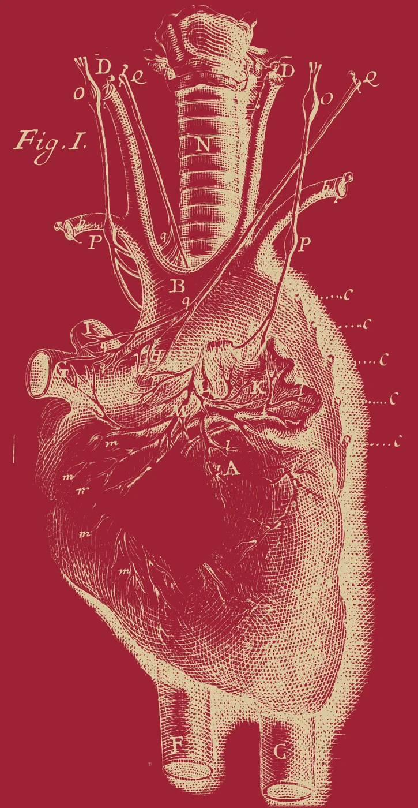
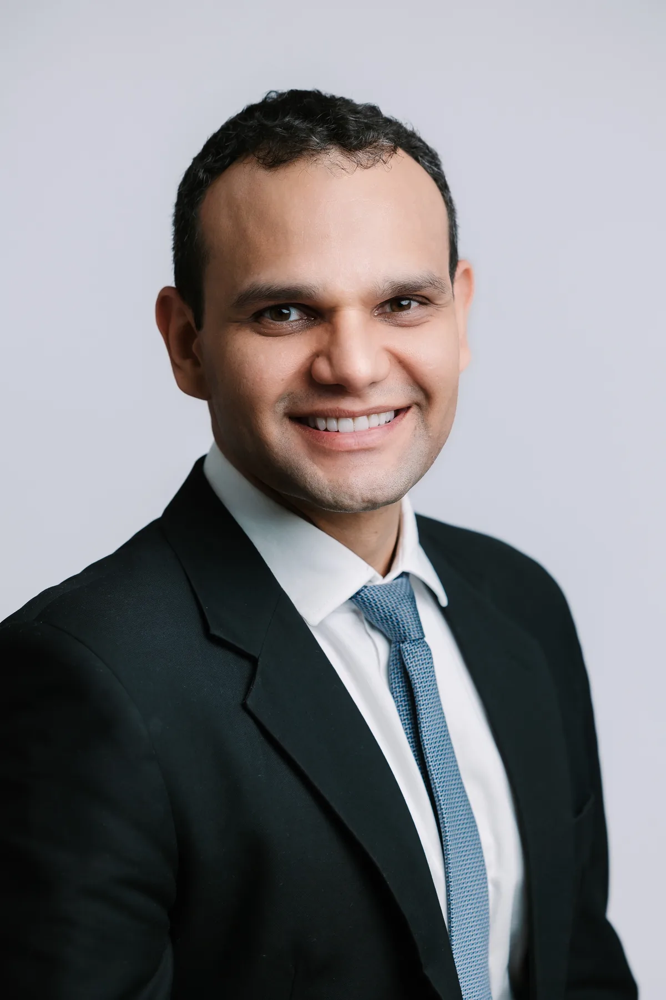

Corpo
Cardiologia preventiva baseada em evidência. Risco que se mede, conduta que se justifica.
Vinde, Espírito Santo, enchei os corações dos vossos fiéis e acendei neles o fogo do vosso amor.
Cardiologista · CRM-DF 19878 · RQE 15628
Nasci em Corrente, no Piauí, filho de farmacêutico e de enfermeira. Em 2000 saí de casa para fazer o Ensino Médio em Goiânia.
Foram dez anos de UTI, desde 2016. Ali vi onde termina a doença do coração. Hoje trabalho para que ela não comece.
Músculo, ritmo, pressão, artérias. Trato com ciência, diretriz e exame que muda conduta.

Na tradição bíblica e cristã, o coração é o centro da pessoa, onde razão, vontade e afeto se encontram.
A medicina mede o que o coração faz. A filosofia pergunta para que ele bate. Eu não abro mão de nenhuma das duas.
Quatro pilares
Cardiologia preventiva baseada em evidência. Risco que se mede, conduta que se justifica.
Aristóteles
A tradição que ensina a pensar com ordem. A conduta clínica precisa de uma razão que se possa explicar.
Viktor Frankl
O ser humano busca sentido, e sentido também importa para a saúde. Escuta, tempo e vínculo com o paciente.
Tomás de Aquino
Fé e razão não se contradizem. Fé cristã vivida, onde todo paciente é acolhido como irmão.

“Fizeste-nos para ti, e inquieto está o nosso coração enquanto não repousa em ti.”Santo Agostinho, Confissões, livro I, cap. 1
Sou cardiologista e sou Cristão.
A fé não substitui o diagnóstico, mas nenhum diagnóstico basta para explicar uma pessoa.
“O coração tem razões que a razão desconhece.”Blaise Pascal, Pensamentos
“Tirarei do vosso peito o coração de pedra e vos darei um coração de carne.”Ezequiel 36,26
Consultas particulares na Medicina Cardeal, na Asa Sul, ou por Telemedicina.